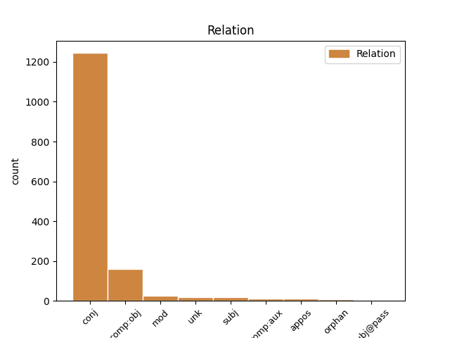
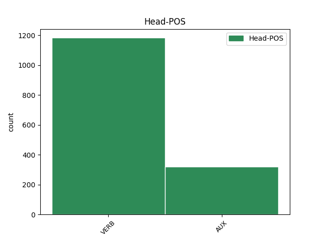
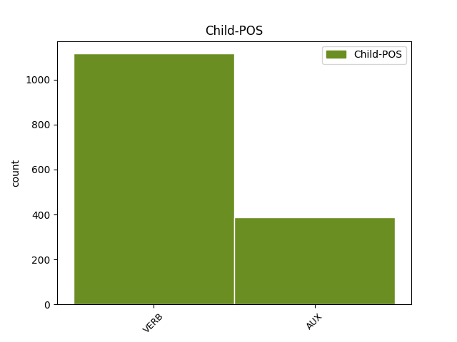

Distribution of features within this leaf



Agreement Rules sorted by frequency.
- When the dependent token is the conjunct(conj) of the head token, and the head token is VERB and the dependent token is VERB.
1 Ale _ _ _ _ 0 _ _ _
2 potom _ _ _ _ 0 _ _ _
3 si _ _ _ _ 0 _ _ _
4 koupíme koupit VERB VB-P---1P-AA--- Mood=Ind|Number=Plur|Person=1|Polarity=Pos|Tense=Pres|VerbForm=Fin|Voice=Act 0 _ _ _
5 láhev _ _ _ _ 0 _ _ _
6 kořalky _ _ _ _ 0 _ _ _
7 a _ _ _ _ 0 _ _ _
8 půjdeme jít VERB VB-P---1F-AA--- Mood=Ind|Number=Plur|Person=1|Polarity=Pos|Tense=Fut|VerbForm=Fin|Voice=Act 4 conj _ _
9 za _ _ _ _ 0 _ _ _
10 ženskými _ _ _ _ 0 _ _ _
11 , _ _ _ _ 0 _ _ _
12 " _ _ _ _ 0 _ _ _
13 navrhoval _ _ _ _ 0 _ _ _
14 druhý _ _ _ _ 0 _ _ _
15 . _ _ _ _ 0 _ _ _
1 " _ _ _ _ 0 _ _ _
2 Myslíš _ _ _ _ 0 _ _ _
3 , _ _ _ _ 0 _ _ _
4 že _ _ _ _ 0 _ _ _
5 jsem _ _ _ _ 0 _ _ _
6 rozdal _ _ _ _ 0 _ _ _
7 všechno _ _ _ _ 0 _ _ _
8 , _ _ _ _ 0 _ _ _
9 co _ _ _ _ 0 _ _ _
10 mám _ _ _ _ 0 _ _ _
11 , _ _ _ _ 0 _ _ _
12 prošel _ _ _ _ 0 _ _ _
13 jsem být AUX VB-S---1P-AA--- Mood=Ind|Number=Sing|Person=1|Polarity=Pos|Tense=Pres|VerbForm=Fin|Voice=Act 0 _ _ _
14 takovým _ _ _ _ 0 _ _ _
15 strádáním _ _ _ _ 0 _ _ _
16 a _ _ _ _ 0 _ _ _
17 trmácel _ _ _ _ 0 _ _ _
18 jsem být AUX VB-S---1P-AA--- Mood=Ind|Number=Sing|Person=1|Polarity=Pos|Tense=Pres|VerbForm=Fin|Voice=Act 13 conj _ _
19 se _ _ _ _ 0 _ _ _
20 až _ _ _ _ 0 _ _ _
21 sem _ _ _ _ 0 _ _ _
22 , _ _ _ _ 0 _ _ _
23 aby _ _ _ _ 0 _ _ _
24 bych _ _ _ _ 0 _ _ _
25 poslouchal _ _ _ _ 0 _ _ _
26 takové _ _ _ _ 0 _ _ _
27 otřepané _ _ _ _ 0 _ _ _
28 žvásty _ _ _ _ 0 _ _ _
29 , _ _ _ _ 0 _ _ _
30 že _ _ _ _ 0 _ _ _
31 život _ _ _ _ 0 _ _ _
32 je _ _ _ _ 0 _ _ _
33 dlouhá _ _ _ _ 0 _ _ _
34 řeka _ _ _ _ 0 _ _ _
35 ? _ _ _ _ 0 _ _ _
36 " _ _ _ _ 0 _ _ _
1 Koneckonců _ _ _ _ 0 _ _ _
2 , _ _ _ _ 0 _ _ _
3 jsem být AUX VB-S---1P-AA--- Mood=Ind|Number=Sing|Person=1|Polarity=Pos|Tense=Pres|VerbForm=Fin|Voice=Act 0 _ _ _
4 realista _ _ _ _ 0 _ _ _
5 a _ _ _ _ 0 _ _ _
6 hříčkám _ _ _ _ 0 _ _ _
7 podvědomí _ _ _ _ 0 _ _ _
8 nevěřím věřit VERB VB-S---1P-NA--- Mood=Ind|Number=Sing|Person=1|Polarity=Neg|Tense=Pres|VerbForm=Fin|Voice=Act 3 conj _ SpaceAfter=No
9 . _ _ _ _ 0 _ _ _
1 Byl _ _ _ _ 0 _ _ _
2 přesvědčen _ _ _ _ 0 _ _ _
3 o _ _ _ _ 0 _ _ _
4 tom _ _ _ _ 0 _ _ _
5 , _ _ _ _ 0 _ _ _
6 že _ _ _ _ 0 _ _ _
7 po _ _ _ _ 0 _ _ _
8 jeho _ _ _ _ 0 _ _ _
9 smrti _ _ _ _ 0 _ _ _
10 syn _ _ _ _ 0 _ _ _
11 dědictví _ _ _ _ 0 _ _ _
12 rychle _ _ _ _ 0 _ _ _
13 rozhází rozházet VERB VB-S---3P-AA--- Mood=Ind|Number=Sing|Person=3|Polarity=Pos|Tense=Pres|VerbForm=Fin|Voice=Act 0 _ _ _
14 a _ _ _ _ 0 _ _ _
15 pak _ _ _ _ 0 _ _ _
16 se _ _ _ _ 0 _ _ _
17 bude být AUX VB-S---3F-AA--- Mood=Ind|Number=Sing|Person=3|Polarity=Pos|Tense=Fut|VerbForm=Fin|Voice=Act 13 conj _ _
18 protloukat _ _ _ _ 0 _ _ _
19 životem _ _ _ _ 0 _ _ _
20 v _ _ _ _ 0 _ _ _
21 bídě _ _ _ _ 0 _ _ _
22 a _ _ _ _ 0 _ _ _
23 opovržení _ _ _ _ 0 _ _ _
24 . _ _ _ _ 0 _ _ _
1 " _ _ _ _ 0 _ _ _
2 Zřejmě _ _ _ _ 0 _ _ _
3 nevíte vědět VERB VB-P---2P-NA--- Mood=Ind|Number=Plur|Person=2|Polarity=Neg|Tense=Pres|VerbForm=Fin|Voice=Act 0 _ _ _
4 , _ _ _ _ 0 _ _ _
5 koho _ _ _ _ 0 _ _ _
6 máte mít VERB VB-P---2P-AA--- Mood=Ind|Number=Plur|Person=2|Polarity=Pos|Tense=Pres|VerbForm=Fin|Voice=Act 3 comp:obj _ _
7 před _ _ _ _ 0 _ _ _
8 sebou _ _ _ _ 0 _ _ _
9 ! _ _ _ _ 0 _ _ _
10 " _ _ _ _ 0 _ _ _
11 nechal _ _ _ _ 0 _ _ _
12 zaslat _ _ _ _ 0 _ _ _
13 odpověď _ _ _ _ 0 _ _ _
14 . _ _ _ _ 0 _ _ _
1 " _ _ _ _ 0 _ _ _
2 No _ _ _ _ 0 _ _ _
3 dobrá _ _ _ _ 0 _ _ _
4 , _ _ _ _ 0 _ _ _
5 " _ _ _ _ 0 _ _ _
6 povídá povídat VERB VB-S---3P-AA--- Mood=Ind|Number=Sing|Person=3|Polarity=Pos|Tense=Pres|VerbForm=Fin|Voice=Act 0 _ _ _
7 nakonec _ _ _ _ 0 _ _ _
8 , _ _ _ _ 0 _ _ _
9 " _ _ _ _ 0 _ _ _
10 oba _ _ _ _ 0 _ _ _
11 dva _ _ _ _ 0 _ _ _
12 jste být AUX VB-P---2P-AA--- Mood=Ind|Number=Plur|Person=2|Polarity=Pos|Tense=Pres|VerbForm=Fin|Voice=Act 6 comp:obj _ _
13 utrpěli _ _ _ _ 0 _ _ _
14 škodu _ _ _ _ 0 _ _ _
15 , _ _ _ _ 0 _ _ _
16 ale _ _ _ _ 0 _ _ _
17 náhradu _ _ _ _ 0 _ _ _
18 dostane _ _ _ _ 0 _ _ _
19 jen _ _ _ _ 0 _ _ _
20 ten _ _ _ _ 0 _ _ _
21 , _ _ _ _ 0 _ _ _
22 který _ _ _ _ 0 _ _ _
23 zítra _ _ _ _ 0 _ _ _
24 ráno _ _ _ _ 0 _ _ _
25 uhádne _ _ _ _ 0 _ _ _
26 tyto _ _ _ _ 0 _ _ _
27 tři _ _ _ _ 0 _ _ _
28 hádanky _ _ _ _ 0 _ _ _
29 : _ _ _ _ 0 _ _ _
1 Průvodce _ _ _ _ 0 _ _ _
2 totiž _ _ _ _ 0 _ _ _
3 informoval _ _ _ _ 0 _ _ _
4 o _ _ _ _ 0 _ _ _
5 tom _ _ _ _ 0 _ _ _
6 , _ _ _ _ 0 _ _ _
7 jak _ _ _ _ 0 _ _ _
8 je _ _ _ _ 0 _ _ _
9 vesnička _ _ _ _ 0 _ _ _
10 romantická _ _ _ _ 0 _ _ _
11 , _ _ _ _ 0 _ _ _
12 výhled _ _ _ _ 0 _ _ _
13 velkolepý _ _ _ _ 0 _ _ _
14 , _ _ _ _ 0 _ _ _
15 jídlo _ _ _ _ 0 _ _ _
16 znamenité _ _ _ _ 0 _ _ _
17 a _ _ _ _ 0 _ _ _
18 ceny _ _ _ _ 0 _ _ _
19 tak _ _ _ _ 0 _ _ _
20 nízké _ _ _ _ 0 _ _ _
21 , _ _ _ _ 0 _ _ _
22 že _ _ _ _ 0 _ _ _
23 si být VERB VB-S---2P-AA--7 Mood=Ind|Number=Sing|Person=2|Polarity=Pos|Style=Coll|Tense=Pres|VerbForm=Fin|Voice=Act 29 mod _ _
24 dokonce _ _ _ _ 0 _ _ _
25 vesnický _ _ _ _ 0 _ _ _
26 blázen _ _ _ _ 0 _ _ _
27 Mirco _ _ _ _ 0 _ _ _
28 raději _ _ _ _ 0 _ _ _
29 vybere vybrat VERB VB-S---3P-AA--- Mood=Ind|Number=Sing|Person=3|Polarity=Pos|Tense=Pres|VerbForm=Fin|Voice=Act 0 _ _ _
30 minci _ _ _ _ 0 _ _ _
31 v _ _ _ _ 0 _ _ _
32 hodnotě _ _ _ _ 0 _ _ _
33 čtvrt _ _ _ _ 0 _ _ _
34 dináru _ _ _ _ 0 _ _ _
35 , _ _ _ _ 0 _ _ _
36 protože _ _ _ _ 0 _ _ _
37 je _ _ _ _ 0 _ _ _
38 na _ _ _ _ 0 _ _ _
39 pohled _ _ _ _ 0 _ _ _
40 větší _ _ _ _ 0 _ _ _
41 než _ _ _ _ 0 _ _ _
42 mince _ _ _ _ 0 _ _ _
43 v _ _ _ _ 0 _ _ _
44 hodnotě _ _ _ _ 0 _ _ _
45 půl _ _ _ _ 0 _ _ _
46 dináru _ _ _ _ 0 _ _ _
47 . _ _ _ _ 0 _ _ _
1 Každý _ _ _ _ 0 _ _ _
2 příběh _ _ _ _ 0 _ _ _
3 přináší přinášet VERB VB-S---3P-AA--- Mood=Ind|Number=Sing|Person=3|Polarity=Pos|Tense=Pres|VerbForm=Fin|Voice=Act 0 _ _ _
4 své _ _ _ _ 0 _ _ _
5 vlastní _ _ _ _ 0 _ _ _
6 poselství _ _ _ _ 0 _ _ _
7 a _ _ _ _ 0 _ _ _
8 má _ _ _ _ 0 _ _ _
9 osobité _ _ _ _ 0 _ _ _
10 účinky _ _ _ _ 0 _ _ _
11 : _ _ _ _ 0 _ _ _
12 některé _ _ _ _ 0 _ _ _
13 vybízí vybízet VERB VB-P---3P-AA--1 Mood=Ind|Number=Plur|Person=3|Polarity=Pos|Tense=Pres|VerbForm=Fin|Voice=Act 3 appos _ _
14 k _ _ _ _ 0 _ _ _
15 zamyšlení _ _ _ _ 0 _ _ _
16 , _ _ _ _ 0 _ _ _
17 jiné _ _ _ _ 0 _ _ _
18 promlouvají _ _ _ _ 0 _ _ _
19 k _ _ _ _ 0 _ _ _
20 pocitům _ _ _ _ 0 _ _ _
21 , _ _ _ _ 0 _ _ _
22 další _ _ _ _ 0 _ _ _
23 povzbuzují _ _ _ _ 0 _ _ _
24 mimické _ _ _ _ 0 _ _ _
25 svaly _ _ _ _ 0 _ _ _
26 k _ _ _ _ 0 _ _ _
27 úsměvu _ _ _ _ 0 _ _ _
28 ( _ _ _ _ 0 _ _ _
29 a _ _ _ _ 0 _ _ _
30 skrývají _ _ _ _ 0 _ _ _
31 možná _ _ _ _ 0 _ _ _
32 metafyzickou _ _ _ _ 0 _ _ _
33 otázku _ _ _ _ 0 _ _ _
34 ) _ _ _ _ 0 _ _ _
35 , _ _ _ _ 0 _ _ _
36 mnohé _ _ _ _ 0 _ _ _
37 dodávají _ _ _ _ 0 _ _ _
38 odvahy _ _ _ _ 0 _ _ _
39 - _ _ _ _ 0 _ _ _
40 ale _ _ _ _ 0 _ _ _
41 všechny _ _ _ _ 0 _ _ _
42 prospívají _ _ _ _ 0 _ _ _
43 duši _ _ _ _ 0 _ _ _
44 . _ _ _ _ 0 _ _ _
1 " _ _ _ _ 0 _ _ _
2 Kdo _ _ _ _ 0 _ _ _
3 neumí umět VERB VB-S---3P-NA--- Mood=Ind|Number=Sing|Person=3|Polarity=Neg|Tense=Pres|VerbForm=Fin|Voice=Act 10 subj _ _
4 ustoupit _ _ _ _ 0 _ _ _
5 a _ _ _ _ 0 _ _ _
6 něčeho _ _ _ _ 0 _ _ _
7 se _ _ _ _ 0 _ _ _
8 vzdát _ _ _ _ 0 _ _ _
9 , _ _ _ _ 0 _ _ _
10 nesmí smět VERB VB-S---3P-NA--- Mood=Ind|Number=Sing|Person=3|Polarity=Neg|Tense=Pres|VerbForm=Fin|Voice=Act 0 _ _ _
11 se _ _ _ _ 0 _ _ _
12 pak _ _ _ _ 0 _ _ _
13 divit _ _ _ _ 0 _ _ _
14 následkům _ _ _ _ 0 _ _ _
15 , _ _ _ _ 0 _ _ _
16 " _ _ _ _ 0 _ _ _
17 řekl _ _ _ _ 0 _ _ _
18 mistr _ _ _ _ 0 _ _ _
19 a _ _ _ _ 0 _ _ _
20 vyprávěl _ _ _ _ 0 _ _ _
21 příběh _ _ _ _ 0 _ _ _
22 o _ _ _ _ 0 _ _ _
23 mušli _ _ _ _ 0 _ _ _
24 a _ _ _ _ 0 _ _ _
25 sluce _ _ _ _ 0 _ _ _
26 . _ _ _ _ 0 _ _ _
1 " _ _ _ _ 0 _ _ _
2 Tak _ _ _ _ 0 _ _ _
3 platí platit VERB VB-S---3P-AA--- Mood=Ind|Number=Sing|Person=3|Polarity=Pos|Tense=Pres|VerbForm=Fin|Voice=Act 0 _ _ _
4 , _ _ _ _ 0 _ _ _
5 " _ _ _ _ 0 _ _ _
6 rozhodla _ _ _ _ 0 _ _ _
7 jsem být AUX VB-S---1P-AA--- Mood=Ind|Number=Sing|Person=1|Polarity=Pos|Tense=Pres|VerbForm=Fin|Voice=Act 3 unk _ _
8 nakonec _ _ _ _ 0 _ _ _
9 . _ _ _ _ 0 _ _ _
1 Co _ _ _ _ 0 _ _ _
2 myslíte myslet VERB VB-P---2P-AA--- Mood=Ind|Number=Plur|Person=2|Polarity=Pos|Tense=Pres|VerbForm=Fin|Voice=Act 0 _ _ _
3 : _ _ _ _ 0 _ _ _
4 když _ _ _ _ 0 _ _ _
5 váš _ _ _ _ 0 _ _ _
6 syn _ _ _ _ 0 _ _ _
7 dostane _ _ _ _ 0 _ _ _
8 horečku _ _ _ _ 0 _ _ _
9 , _ _ _ _ 0 _ _ _
10 mám mít VERB VB-S---1P-AA--- Mood=Ind|Number=Sing|Person=1|Polarity=Pos|Tense=Pres|VerbForm=Fin|Voice=Act 2 unk _ _
11 dát _ _ _ _ 0 _ _ _
12 léky _ _ _ _ 0 _ _ _
13 jeho _ _ _ _ 0 _ _ _
14 sluhům _ _ _ _ 0 _ _ _
15 , _ _ _ _ 0 _ _ _
16 a _ _ _ _ 0 _ _ _
17 ne _ _ _ _ 0 _ _ _
18 jemu _ _ _ _ 0 _ _ _
19 ? _ _ _ _ 0 _ _ _
20 " _ _ _ _ 0 _ _ _
1 Co _ _ _ _ 0 _ _ _
2 on _ _ _ _ 0 _ _ _
3 považuje považovat VERB VB-S---3P-AA--- Mood=Ind|Number=Sing|Person=3|Polarity=Pos|Tense=Pres|VerbForm=Fin|Voice=Act 8 subj _ _
4 za _ _ _ _ 0 _ _ _
5 vodu _ _ _ _ 0 _ _ _
6 ráje _ _ _ _ 0 _ _ _
7 , _ _ _ _ 0 _ _ _
8 je být AUX VB-S---3P-AA--- Mood=Ind|Number=Sing|Person=3|Polarity=Pos|Tense=Pres|VerbForm=Fin|Voice=Act 0 _ _ _
9 pro _ _ _ _ 0 _ _ _
10 nás _ _ _ _ 0 _ _ _
11 nechutná _ _ _ _ 0 _ _ _
12 břečka _ _ _ _ 0 _ _ _
13 . _ _ _ _ 0 _ _ _
1 Pokorně _ _ _ _ 0 _ _ _
2 se _ _ _ _ 0 _ _ _
3 mu _ _ _ _ 0 _ _ _
4 pokloníš _ _ _ _ 0 _ _ _
5 a _ _ _ _ 0 _ _ _
6 budeš být AUX VB-S---2F-AA--- Mood=Ind|Number=Sing|Person=2|Polarity=Pos|Tense=Fut|VerbForm=Fin|Voice=Act 0 _ _ _
7 žít _ _ _ _ 0 _ _ _
8 tak _ _ _ _ 0 _ _ _
9 , _ _ _ _ 0 _ _ _
10 jak _ _ _ _ 0 _ _ _
11 ti _ _ _ _ 0 _ _ _
12 určí určit VERB VB-S---3P-AA--- Mood=Ind|Number=Sing|Person=3|Polarity=Pos|Tense=Pres|VerbForm=Fin|Voice=Act 6 mod _ SpaceAfter=No
13 . _ _ _ _ 0 _ _ _
1 A _ _ _ _ 0 _ _ _
2 už _ _ _ _ 0 _ _ _
3 z _ _ _ _ 0 _ _ _
4 něho _ _ _ _ 0 _ _ _
5 brzy _ _ _ _ 0 _ _ _
6 bude _ _ _ _ 0 _ _ _
7 taky _ _ _ _ 0 _ _ _
8 doktor _ _ _ _ 0 _ _ _
9 , _ _ _ _ 0 _ _ _
10 ale _ _ _ _ 0 _ _ _
11 ne _ _ _ _ 0 _ _ _
12 medicíny _ _ _ _ 0 _ _ _
13 - _ _ _ _ 0 _ _ _
14 advokát _ _ _ _ 0 _ _ _
15 nebo _ _ _ _ 0 _ _ _
16 soudce _ _ _ _ 0 _ _ _
17 , _ _ _ _ 0 _ _ _
18 nebo _ _ _ _ 0 _ _ _
19 dokonce _ _ _ _ 0 _ _ _
20 prokurátor _ _ _ _ 0 _ _ _
21 , _ _ _ _ 0 _ _ _
22 " _ _ _ _ 0 _ _ _
23 chrlí chrlit VERB VB-S---3P-AA--- Mood=Ind|Number=Sing|Person=3|Polarity=Pos|Tense=Pres|VerbForm=Fin|Voice=Act 0 _ _ _
24 informace _ _ _ _ 0 _ _ _
25 , _ _ _ _ 0 _ _ _
26 ale _ _ _ _ 0 _ _ _
27 profesor _ _ _ _ 0 _ _ _
28 nemá mít VERB VB-S---3P-NA--- Mood=Ind|Number=Sing|Person=3|Polarity=Neg|Tense=Pres|VerbForm=Fin|Voice=Act 23 orphan _ _
29 chuť _ _ _ _ 0 _ _ _
30 někoho _ _ _ _ 0 _ _ _
31 poslouchat _ _ _ _ 0 _ _ _
32 , _ _ _ _ 0 _ _ _
33 potřebuje _ _ _ _ 0 _ _ _
34 klid _ _ _ _ 0 _ _ _
35 . _ _ _ _ 0 _ _ _
1 " _ _ _ _ 0 _ _ _
2 Jsi být VERB VB-S---2P-AA--- Mood=Ind|Number=Sing|Person=2|Polarity=Pos|Tense=Pres|VerbForm=Fin|Voice=Act 0 _ _ _
3 tedy _ _ _ _ 0 _ _ _
4 v _ _ _ _ 0 _ _ _
5 nebi _ _ _ _ 0 _ _ _
6 , _ _ _ _ 0 _ _ _
7 " _ _ _ _ 0 _ _ _
8 oslovil _ _ _ _ 0 _ _ _
9 ho _ _ _ _ 0 _ _ _
10 , _ _ _ _ 0 _ _ _
11 " _ _ _ _ 0 _ _ _
12 jak _ _ _ _ 0 _ _ _
13 jsi být AUX VB-S---2P-AA--- Mood=Ind|Number=Sing|Person=2|Polarity=Pos|Tense=Pres|VerbForm=Fin|Voice=Act 2 mod _ _
14 si _ _ _ _ 0 _ _ _
15 přál _ _ _ _ 0 _ _ _
16 . _ _ _ _ 0 _ _ _
1 Všimla _ _ _ _ 0 _ _ _
2 jsem být AUX VB-S---1P-AA--- Mood=Ind|Number=Sing|Person=1|Polarity=Pos|Tense=Pres|VerbForm=Fin|Voice=Act 21 comp:aux _ _
3 si _ _ _ _ 0 _ _ _
4 , _ _ _ _ 0 _ _ _
5 že _ _ _ _ 0 _ _ _
6 v _ _ _ _ 0 _ _ _
7 přecpané _ _ _ _ 0 _ _ _
8 tramvaji _ _ _ _ 0 _ _ _
9 se _ _ _ _ 0 _ _ _
10 jen _ _ _ _ 0 _ _ _
11 tak _ _ _ _ 0 _ _ _
12 tak _ _ _ _ 0 _ _ _
13 drží _ _ _ _ 0 _ _ _
14 na _ _ _ _ 0 _ _ _
15 nohou _ _ _ _ 0 _ _ _
16 rezignovaný _ _ _ _ 0 _ _ _
17 starý _ _ _ _ 0 _ _ _
18 pán _ _ _ _ 0 _ _ _
19 , _ _ _ _ 0 _ _ _
20 usmála _ _ _ _ 0 _ _ _
21 jsem být AUX VB-S---1P-AA--- Mood=Ind|Number=Sing|Person=1|Polarity=Pos|Tense=Pres|VerbForm=Fin|Voice=Act 0 _ _ _
22 se _ _ _ _ 0 _ _ _
23 na _ _ _ _ 0 _ _ _
24 něj _ _ _ _ 0 _ _ _
25 a _ _ _ _ 0 _ _ _
26 nabídla _ _ _ _ 0 _ _ _
27 mu _ _ _ _ 0 _ _ _
28 místo _ _ _ _ 0 _ _ _
29 . _ _ _ _ 0 _ _ _
1 " _ _ _ _ 0 _ _ _
2 Já _ _ _ _ 0 _ _ _
3 vám _ _ _ _ 0 _ _ _
4 pana _ _ _ _ 0 _ _ _
5 doktora _ _ _ _ 0 _ _ _
6 předám _ _ _ _ 0 _ _ _
7 , _ _ _ _ 0 _ _ _
8 " _ _ _ _ 0 _ _ _
9 prohlásila _ _ _ _ 0 _ _ _
10 nakonec _ _ _ _ 0 _ _ _
11 a _ _ _ _ 0 _ _ _
12 já _ _ _ _ 0 _ _ _
13 jsem být AUX VB-S---1P-AA--- Mood=Ind|Number=Sing|Person=1|Polarity=Pos|Tense=Pres|VerbForm=Fin|Voice=Act 0 _ _ _
14 pěstí _ _ _ _ 0 _ _ _
15 zabušila _ _ _ _ 0 _ _ _
16 do _ _ _ _ 0 _ _ _
17 stolu _ _ _ _ 0 _ _ _
18 , _ _ _ _ 0 _ _ _
19 div _ _ _ _ 0 _ _ _
20 jsem být AUX VB-S---1P-AA--- Mood=Ind|Number=Sing|Person=1|Polarity=Pos|Tense=Pres|VerbForm=Fin|Voice=Act 13 mod _ _
21 ho _ _ _ _ 0 _ _ _
22 nerozbila _ _ _ _ 0 _ _ _
23 . _ _ _ _ 0 _ _ _
1 " _ _ _ _ 0 _ _ _
2 Kdo _ _ _ _ 0 _ _ _
3 je být AUX VB-S---3P-AA--- Mood=Ind|Number=Sing|Person=3|Polarity=Pos|Tense=Pres|VerbForm=Fin|Voice=Act 12 subj _ _
4 tak _ _ _ _ 0 _ _ _
5 bohatý _ _ _ _ 0 _ _ _
6 , _ _ _ _ 0 _ _ _
7 že _ _ _ _ 0 _ _ _
8 má _ _ _ _ 0 _ _ _
9 vlastní _ _ _ _ 0 _ _ _
10 studnu _ _ _ _ 0 _ _ _
11 , _ _ _ _ 0 _ _ _
12 má mít VERB VB-S---3P-AA--- Mood=Ind|Number=Sing|Person=3|Polarity=Pos|Tense=Pres|VerbForm=Fin|Voice=Act 0 _ _ _
13 nejlepší _ _ _ _ 0 _ _ _
14 vodu _ _ _ _ 0 _ _ _
15 a _ _ _ _ 0 _ _ _
16 určitě _ _ _ _ 0 _ _ _
17 nezná _ _ _ _ 0 _ _ _
18 žádné _ _ _ _ 0 _ _ _
19 utrpení _ _ _ _ 0 _ _ _
20 , _ _ _ _ 0 _ _ _
21 " _ _ _ _ 0 _ _ _
22 pomyslela _ _ _ _ 0 _ _ _
23 si _ _ _ _ 0 _ _ _
24 . _ _ _ _ 0 _ _ _
1 Při _ _ _ _ 0 _ _ _
2 pohledu _ _ _ _ 0 _ _ _
3 zpět _ _ _ _ 0 _ _ _
4 mi _ _ _ _ 0 _ _ _
5 není být AUX VB-S---3P-NA--- Mood=Ind|Number=Sing|Person=3|Polarity=Neg|Tense=Pres|VerbForm=Fin|Voice=Act 0 _ _ _
6 jasné _ _ _ _ 0 _ _ _
7 , _ _ _ _ 0 _ _ _
8 jak _ _ _ _ 0 _ _ _
9 jsme být AUX VB-P---1P-AA--- Mood=Ind|Number=Plur|Person=1|Polarity=Pos|Tense=Pres|VerbForm=Fin|Voice=Act 5 subj _ _
10 to _ _ _ _ 0 _ _ _
11 dokázali _ _ _ _ 0 _ _ _
12 , _ _ _ _ 0 _ _ _
13 jenom _ _ _ _ 0 _ _ _
14 vím _ _ _ _ 0 _ _ _
15 , _ _ _ _ 0 _ _ _
16 že _ _ _ _ 0 _ _ _
17 jsme _ _ _ _ 0 _ _ _
18 museli _ _ _ _ 0 _ _ _
19 ukrást _ _ _ _ 0 _ _ _
20 nějaké _ _ _ _ 0 _ _ _
21 povolovací _ _ _ _ 0 _ _ _
22 formuláře _ _ _ _ 0 _ _ _
23 z _ _ _ _ 0 _ _ _
24 obvodního _ _ _ _ 0 _ _ _
25 kulturního _ _ _ _ 0 _ _ _
26 střediska _ _ _ _ 0 _ _ _
27 , _ _ _ _ 0 _ _ _
28 zfalšovat _ _ _ _ 0 _ _ _
29 pár _ _ _ _ 0 _ _ _
30 razítek _ _ _ _ 0 _ _ _
31 a _ _ _ _ 0 _ _ _
32 podpisů _ _ _ _ 0 _ _ _
33 , _ _ _ _ 0 _ _ _
34 a _ _ _ _ 0 _ _ _
35 dokonce _ _ _ _ 0 _ _ _
36 jsme _ _ _ _ 0 _ _ _
37 i _ _ _ _ 0 _ _ _
38 podplatili _ _ _ _ 0 _ _ _
39 vylepovače _ _ _ _ 0 _ _ _
40 plakátů _ _ _ _ 0 _ _ _
41 , _ _ _ _ 0 _ _ _
42 aby _ _ _ _ 0 _ _ _
43 by _ _ _ _ 0 _ _ _
44 nás _ _ _ _ 0 _ _ _
45 nalepili _ _ _ _ 0 _ _ _
46 před _ _ _ _ 0 _ _ _
47 program _ _ _ _ 0 _ _ _
48 Národního _ _ _ _ 0 _ _ _
49 divadla _ _ _ _ 0 _ _ _
50 . _ _ _ _ 0 _ _ _
Disagree Examples:
1 " _ _ _ _ 0 _ _ _
2 Prozraďte prozradit VERB Vi-P---2--A---- Mood=Imp|Number=Plur|Person=2|Polarity=Pos|VerbForm=Fin 0 _ _ _
3 mi _ _ _ _ 0 _ _ _
4 , _ _ _ _ 0 _ _ _
5 proč _ _ _ _ 0 _ _ _
6 že _ _ _ _ 0 _ _ _
7 jsou být AUX VB-P---3P-AA--- Mood=Ind|Number=Plur|Person=3|Polarity=Pos|Tense=Pres|VerbForm=Fin|Voice=Act 2 comp:obj _ _
8 tak _ _ _ _ 0 _ _ _
9 poničené _ _ _ _ 0 _ _ _
10 ? _ _ _ _ 0 _ _ _
1 Když _ _ _ _ 0 _ _ _
2 jsem _ _ _ _ 0 _ _ _
3 s _ _ _ _ 0 _ _ _
4 ní _ _ _ _ 0 _ _ _
5 byla _ _ _ _ 0 _ _ _
6 , _ _ _ _ 0 _ _ _
7 jako _ _ _ _ 0 _ _ _
8 bych být AUX Vc-S---1------- Mood=Cnd|Number=Sing|Person=1|VerbForm=Fin 0 _ _ _
9 i _ _ _ _ 0 _ _ _
10 já _ _ _ _ 0 _ _ _
11 viděla _ _ _ _ 0 _ _ _
12 do _ _ _ _ 0 _ _ _
13 onoho _ _ _ _ 0 _ _ _
14 zázračného _ _ _ _ 0 _ _ _
15 a _ _ _ _ 0 _ _ _
16 spravedlivého _ _ _ _ 0 _ _ _
17 zákulisí _ _ _ _ 0 _ _ _
18 , _ _ _ _ 0 _ _ _
19 v _ _ _ _ 0 _ _ _
20 těch _ _ _ _ 0 _ _ _
21 chvílích _ _ _ _ 0 _ _ _
22 jsem být AUX VB-S---1P-AA--- Mood=Ind|Number=Sing|Person=1|Polarity=Pos|Tense=Pres|VerbForm=Fin|Voice=Act 8 conj _ _
23 byla _ _ _ _ 0 _ _ _
24 vděčná _ _ _ _ 0 _ _ _
25 , _ _ _ _ 0 _ _ _
26 že _ _ _ _ 0 _ _ _
27 žiju _ _ _ _ 0 _ _ _
28 a _ _ _ _ 0 _ _ _
29 že _ _ _ _ 0 _ _ _
30 mohu _ _ _ _ 0 _ _ _
31 odejít _ _ _ _ 0 _ _ _
32 po _ _ _ _ 0 _ _ _
33 svých _ _ _ _ 0 _ _ _
34 nohou _ _ _ _ 0 _ _ _
35 k _ _ _ _ 0 _ _ _
36 někomu _ _ _ _ 0 _ _ _
37 , _ _ _ _ 0 _ _ _
38 kdo _ _ _ _ 0 _ _ _
39 mě _ _ _ _ 0 _ _ _
40 potřebuje _ _ _ _ 0 _ _ _
41 , _ _ _ _ 0 _ _ _
42 pohladit _ _ _ _ 0 _ _ _
43 rukou _ _ _ _ 0 _ _ _
44 toho _ _ _ _ 0 _ _ _
45 , _ _ _ _ 0 _ _ _
46 koho _ _ _ _ 0 _ _ _
47 miluji _ _ _ _ 0 _ _ _
48 , _ _ _ _ 0 _ _ _
49 že _ _ _ _ 0 _ _ _
50 mám _ _ _ _ 0 _ _ _
51 někoho _ _ _ _ 0 _ _ _
52 , _ _ _ _ 0 _ _ _
53 koho _ _ _ _ 0 _ _ _
54 mohu _ _ _ _ 0 _ _ _
55 políbit _ _ _ _ 0 _ _ _
56 , _ _ _ _ 0 _ _ _
57 obejmout _ _ _ _ 0 _ _ _
58 . _ _ _ _ 0 _ _ _
59 . _ _ _ _ 0 _ _ _
60 . _ _ _ _ 0 _ _ _
1 Mohou moci VERB VB-P---3P-AA--1 Mood=Ind|Number=Plur|Person=3|Polarity=Pos|Tense=Pres|VerbForm=Fin|Voice=Act 0 _ _ _
2 to _ _ _ _ 0 _ _ _
3 být _ _ _ _ 0 _ _ _
4 jména _ _ _ _ 0 _ _ _
5 vašich _ _ _ _ 0 _ _ _
6 bližních _ _ _ _ 0 _ _ _
7 , _ _ _ _ 0 _ _ _
8 věci _ _ _ _ 0 _ _ _
9 , _ _ _ _ 0 _ _ _
10 koníček _ _ _ _ 0 _ _ _
11 , _ _ _ _ 0 _ _ _
12 práce _ _ _ _ 0 _ _ _
13 , _ _ _ _ 0 _ _ _
14 zvířata _ _ _ _ 0 _ _ _
15 , _ _ _ _ 0 _ _ _
16 prostě _ _ _ _ 0 _ _ _
17 to _ _ _ _ 0 _ _ _
18 , _ _ _ _ 0 _ _ _
19 co _ _ _ _ 0 _ _ _
20 je _ _ _ _ 0 _ _ _
21 pro _ _ _ _ 0 _ _ _
22 vás _ _ _ _ 0 _ _ _
23 důležité _ _ _ _ 0 _ _ _
24 , _ _ _ _ 0 _ _ _
25 těchhle _ _ _ _ 0 _ _ _
26 šestnáct _ _ _ _ 0 _ _ _
27 položek _ _ _ _ 0 _ _ _
28 by být AUX Vc------------- Mood=Cnd|VerbForm=Fin 1 conj _ _
29 mělo _ _ _ _ 0 _ _ _
30 shrnout _ _ _ _ 0 _ _ _
31 to _ _ _ _ 0 _ _ _
32 hlavní _ _ _ _ 0 _ _ _
33 , _ _ _ _ 0 _ _ _
34 co _ _ _ _ 0 _ _ _
35 pro _ _ _ _ 0 _ _ _
36 vás _ _ _ _ 0 _ _ _
37 život _ _ _ _ 0 _ _ _
38 má _ _ _ _ 0 _ _ _
39 . _ _ _ _ 0 _ _ _
40 . _ _ _ _ 0 _ _ _
41 . _ _ _ _ 0 _ _ _
1 Od _ _ _ _ 0 _ _ _
2 té _ _ _ _ 0 _ _ _
3 doby _ _ _ _ 0 _ _ _
4 jsem být AUX VB-S---1P-AA--- Mood=Ind|Number=Sing|Person=1|Polarity=Pos|Tense=Pres|VerbForm=Fin|Voice=Act 0 _ _ _
5 na _ _ _ _ 0 _ _ _
6 Mont _ _ _ _ 0 _ _ _
7 Saint _ _ _ _ 0 _ _ _
8 Michel _ _ _ _ 0 _ _ _
9 nebyl _ _ _ _ 0 _ _ _
10 , _ _ _ _ 0 _ _ _
11 nesnesl _ _ _ _ 0 _ _ _
12 bych být AUX Vc-S---1------- Mood=Cnd|Number=Sing|Person=1|VerbForm=Fin 4 conj _ _
13 zase _ _ _ _ 0 _ _ _
14 pohled _ _ _ _ 0 _ _ _
15 na _ _ _ _ 0 _ _ _
16 to _ _ _ _ 0 _ _ _
17 místo _ _ _ _ 0 _ _ _
18 , _ _ _ _ 0 _ _ _
19 které _ _ _ _ 0 _ _ _
20 jsem _ _ _ _ 0 _ _ _
21 miloval _ _ _ _ 0 _ _ _
22 a _ _ _ _ 0 _ _ _
23 kde _ _ _ _ 0 _ _ _
24 se _ _ _ _ 0 _ _ _
25 tohle _ _ _ _ 0 _ _ _
26 stalo _ _ _ _ 0 _ _ _
27 . _ _ _ _ 0 _ _ _
1 " _ _ _ _ 0 _ _ _
2 Podívejme podívat VERB Vi-P---1--A---- Mood=Imp|Number=Plur|Person=1|Polarity=Pos|VerbForm=Fin 0 _ _ _
3 , _ _ _ _ 0 _ _ _
4 na _ _ _ _ 0 _ _ _
5 to _ _ _ _ 0 _ _ _
6 jsem být AUX VB-S---1P-AA--- Mood=Ind|Number=Sing|Person=1|Polarity=Pos|Tense=Pres|VerbForm=Fin|Voice=Act 2 conj _ _
7 málem _ _ _ _ 0 _ _ _
8 zapomněla _ _ _ _ 0 _ _ _
9 , _ _ _ _ 0 _ _ _
10 " _ _ _ _ 0 _ _ _
11 řekla _ _ _ _ 0 _ _ _
12 babička _ _ _ _ 0 _ _ _
13 . _ _ _ _ 0 _ _ _